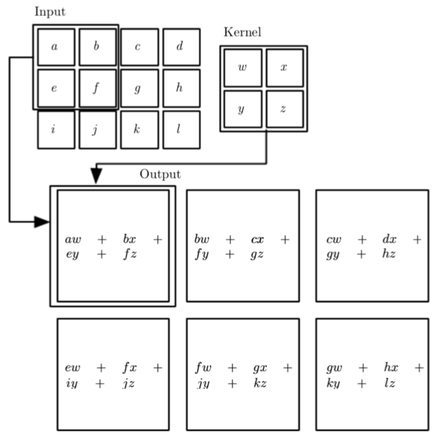
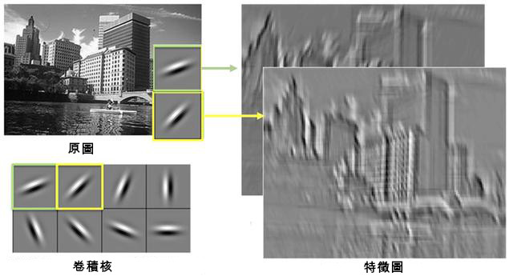
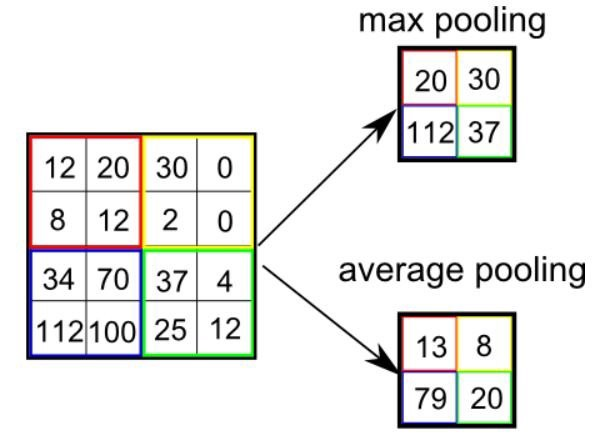

VGG19的構造
VGG19是總共擁有19層的卷積神經網路，其架構可以參考下圖：

可以看到，VGG19被分成了五個區塊(block)。其中由conv開頭的就是代表convolution，也就是卷積層， 這些卷積層如同前面提到的，具備類神經網路多層的結構，只是由卷積核所組成，負責進行卷積的運算。
不過從圖中也可以看到，除了卷積層之外，還有以maxpool開頭的結構， 這些部分被稱為池化(pooling)層，他們的功用會在後面說明。 一般而言，池化層會接在卷積層後面，有著幫助卷積神經網路學習的效果。
在整個網路最後面的是fc開頭的全連接(fully connected)層，他們的功用也會在後面說明。 簡單來說，全連接層通常出現在整個卷積神經網路的最後，協助網路輸出最後的結果。
那麼接下來，就針對卷積層、池化層與全連接層這三個部分來說明。
可以看到，VGG19被分成了五個區塊(block)。其中由conv開頭的就是代表convolution，也就是卷積層， 這些卷積層如同前面提到的，具備類神經網路多層的結構，只是由卷積核所組成，負責進行卷積的運算。
不過從圖中也可以看到，除了卷積層之外，還有以maxpool開頭的結構， 這些部分被稱為池化(pooling)層，他們的功用會在後面說明。 一般而言，池化層會接在卷積層後面，有著幫助卷積神經網路學習的效果。
在整個網路最後面的是fc開頭的全連接(fully connected)層，他們的功用也會在後面說明。 簡單來說，全連接層通常出現在整個卷積神經網路的最後，協助網路輸出最後的結果。
那麼接下來，就針對卷積層、池化層與全連接層這三個部分來說明。
什麼是「卷積層」？
卷積層顧名思義，就是進行卷積運算的地方，也是卷積神經網路之中，最重要的構造。
一個卷積層通常由多個卷積核（也叫過濾器）所組成，以VGG19的第一個卷積層為例，它就是由64個大小為3x3的卷積核所組成的。（這裏的3x3指的是長跟寬，因為彩色圖片有紅綠藍三個顏色的通道，實際上的維度是3x3x3）。在這裏，每個3x3的卷積核都代表了在3x3的範圍裡的一個局部特徵，然後這些卷積核會逐步掃過整張圖片，並產生出對應的特徵圖。

什麼是特徵圖呢？每一個卷積核在與輸入的圖片做完卷積運算後，所產生的圖片就是特徵圖。特徵裡的每個值都可以視為某種特徵出現的程度。如果特徵圖裡面的值越大，就代表在原本圖片中，對應位置的特徵越符合卷積核所學到的特徵。
要注意的是，因為卷積的運算實際上會讓圖片縮小（舉例來說，3x3的卷積會讓圖片的長跟寬都減少2），所以一般為了維持圖片的大小，在進行卷積前會在邊緣的地方補零再進行運算。
而經過卷積層所產生的特徵圖，還會再繼續被送進後面的卷積層做運算，而越後面的卷積層，因為看到了前面小範圍的特徵，就可以學到範圍更大、也更複雜的特徵。藉由這種方法來學習複雜的特徵規律，就是卷積神經網路的特色。

一個卷積層通常由多個卷積核（也叫過濾器）所組成，以VGG19的第一個卷積層為例，它就是由64個大小為3x3的卷積核所組成的。（這裏的3x3指的是長跟寬，因為彩色圖片有紅綠藍三個顏色的通道，實際上的維度是3x3x3）。在這裏，每個3x3的卷積核都代表了在3x3的範圍裡的一個局部特徵，然後這些卷積核會逐步掃過整張圖片，並產生出對應的特徵圖。
什麼是特徵圖呢？每一個卷積核在與輸入的圖片做完卷積運算後，所產生的圖片就是特徵圖。特徵裡的每個值都可以視為某種特徵出現的程度。如果特徵圖裡面的值越大，就代表在原本圖片中，對應位置的特徵越符合卷積核所學到的特徵。

要注意的是，因為卷積的運算實際上會讓圖片縮小（舉例來說，3x3的卷積會讓圖片的長跟寬都減少2），所以一般為了維持圖片的大小，在進行卷積前會在邊緣的地方補零再進行運算。
而經過卷積層所產生的特徵圖，還會再繼續被送進後面的卷積層做運算，而越後面的卷積層，因為看到了前面小範圍的特徵，就可以學到範圍更大、也更複雜的特徵。藉由這種方法來學習複雜的特徵規律，就是卷積神經網路的特色。
什麼是「池化層」？
輸入的影像在經過卷積層的運算後所產生的特徵圖，一般來說，還會經過池化的步驟來壓縮。
以VGG19所使用的2x2池化層為例，輸入的特徵圖會被分成許多2x2的區塊，而每個區塊都只會保留其中最大的值。這種保留最大值的方式稱為最大池化（除此之外也有不同的池化方式，例如把所有值平均的平均池化）。而經過這樣的池化運算之後，整個特徵圖的長跟寬都會除以2，面積變成四分之一，有效的壓縮整張圖片的資訊。
因為在特徵圖裡，每個值都可以視為某種特徵出現的程度，而最大池化所做的就是把局部範圍內最強的特徵保留下來，平均池化則會看整體範圍出現的特徵的平均。通常在卷積神經網路中，這兩種池化運算式最常被使用的。
雖然池化實際上對於增加模型準確度的幫助不大，不過對於減少模型的參數，以及幫助模型的訓練上相當有用。因此，目前絕大多數的卷積神經網路都有著這樣的構造。
以VGG19所使用的2x2池化層為例，輸入的特徵圖會被分成許多2x2的區塊，而每個區塊都只會保留其中最大的值。這種保留最大值的方式稱為最大池化（除此之外也有不同的池化方式，例如把所有值平均的平均池化）。而經過這樣的池化運算之後，整個特徵圖的長跟寬都會除以2，面積變成四分之一，有效的壓縮整張圖片的資訊。

因為在特徵圖裡，每個值都可以視為某種特徵出現的程度，而最大池化所做的就是把局部範圍內最強的特徵保留下來，平均池化則會看整體範圍出現的特徵的平均。通常在卷積神經網路中，這兩種池化運算式最常被使用的。
雖然池化實際上對於增加模型準確度的幫助不大，不過對於減少模型的參數，以及幫助模型的訓練上相當有用。因此，目前絕大多數的卷積神經網路都有著這樣的構造。
什麼是「全連接層」？
全連接層，實際上的構造類似一般的類神經網路，它通常會出現在卷積神經網路最後面的架構。
以VGG19為例，原本輸入的圖片在經過多次卷積以及池化的操作之後，最後會產生出長跟寬為7的特徵圖（7x7x512）。而背後的意思就是在經過多層的卷積之後，卷積神經網路已經辨認出了512個大範圍的特徵。這時候空間的相對位置已經沒那麼重要，所以可以把特徵圖直接當成一個向量，並利用基本的類神經網路架構，也就是全連接層，來進行最後的預測。
全連接層實際的運算相當單純，就是把輸入的向量與卷積神經網路的權重值進行矩陣乘法運算。最後再通過softmax函數運算的結果。
值得一題的是，如果我們想把原本訓練好的模型拿去不同的任務使用，一般來說我們不需要重新訓練整個卷積神經網路，因為前面的卷積核層學到的特徵很可能還是有用。這時候只需要重新訓練最後面一部份的卷積層跟全連接層的部分，通常就可以有不錯的結果。
以VGG19為例，原本輸入的圖片在經過多次卷積以及池化的操作之後，最後會產生出長跟寬為7的特徵圖（7x7x512）。而背後的意思就是在經過多層的卷積之後，卷積神經網路已經辨認出了512個大範圍的特徵。這時候空間的相對位置已經沒那麼重要，所以可以把特徵圖直接當成一個向量，並利用基本的類神經網路架構，也就是全連接層，來進行最後的預測。
全連接層實際的運算相當單純，就是把輸入的向量與卷積神經網路的權重值進行矩陣乘法運算。最後再通過softmax函數運算的結果。
值得一題的是，如果我們想把原本訓練好的模型拿去不同的任務使用，一般來說我們不需要重新訓練整個卷積神經網路，因為前面的卷積核層學到的特徵很可能還是有用。這時候只需要重新訓練最後面一部份的卷積層跟全連接層的部分，通常就可以有不錯的結果。